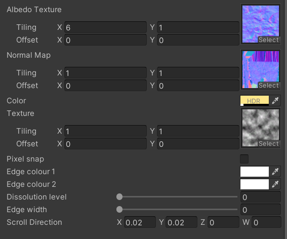

This collection of shaders was used in the game Buried Voices in order to provide different visual effects.
Transparent Dissolve Frag/Vertex ShadersThis material consist of a fragment and vertex shader, and is a reimplementation of the dissolve algorithm from benloong's surface dissolve shader. Most of the dissolve shaders available had only support for opaque models/textures, with just an albedo channel. This material exposes several additional properties: an HDR color tint, and a normal map, and scroll parameters. Rather than implement full normal map support in the vertex shader, the rgb output of the frag shader is darkened based off of the normal map in order to create a "convincing enough" illusion of depth. Most importantly, the render type for the shader is set to transparent, which allows the alpha on the HDR tint to control the transparency of the fog. The material samples 3 noise textures for the albedo (fog pattern), normals, and the edges (using a simple cutout threshhold). Combined with a simple Unity script to interpolate the dissolution parameter over time, this creates a neat floating fog effect that can dissolve in and out smoothly. |
 | |
Surface Dissolve Shader with Proper Normal Map SupportThis latter variant accomplishes a similar dissolution effect, but is implemented as a Unity Surface shader to allow for proper use of normal maps. While this did not allow for an easy implementation of the transparency and color tint effects of the TransparentDissolve shader, it made integrating normal maps correctly considerably easier compared to the fragment shader approach. This shader was heavily inspired by The Developer's Dissolve Shader, and utilizes their implementation of the edge cutoff for the dissolution effect, with modifications to allow HDR color instead of standard color tinting for the edges. |